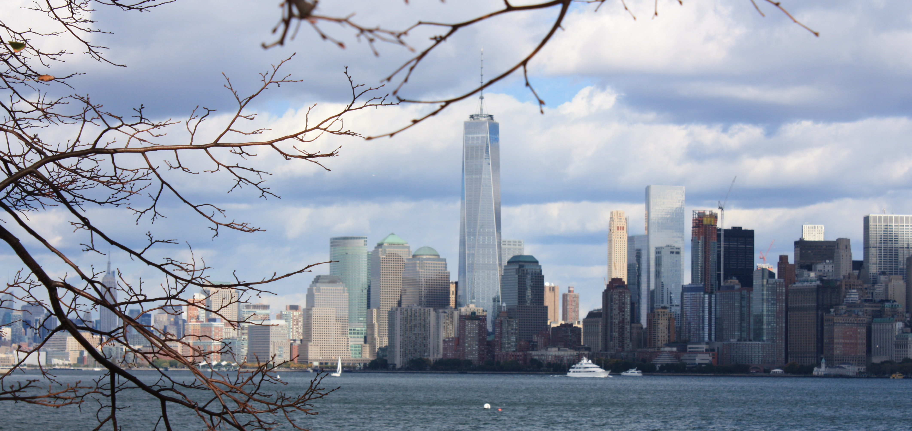

Manhattan
Manhattan est l'un des cinq arrondissements de la ville de New York. Il correspond
en majeure partie à l'île de Manhattan, d'une superficie de 58,8 km2, entourée par
le fleuve Hudson à l'ouest, l'Upper New York Bay au sud, l'East River à l'est et
la Harlem River au nord.
